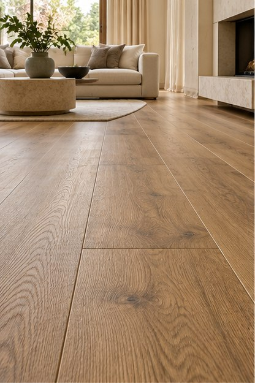
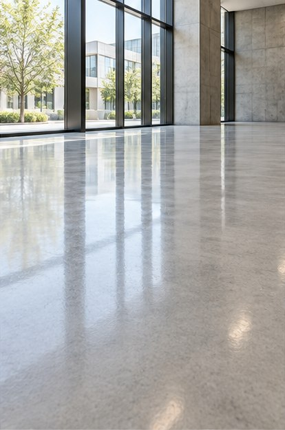
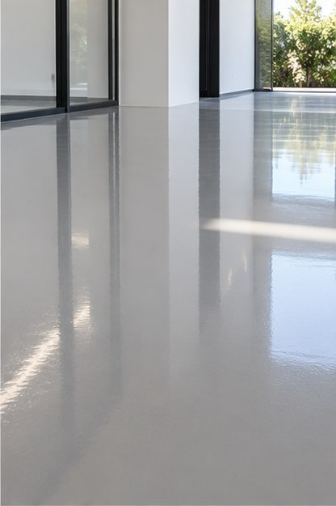
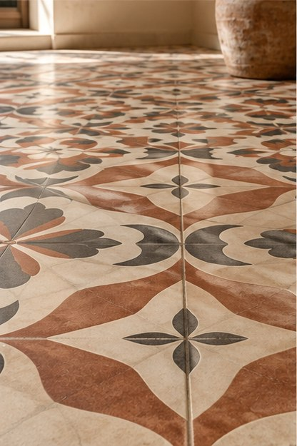
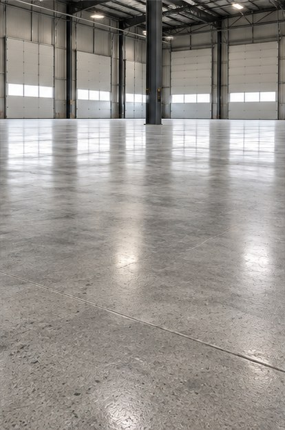
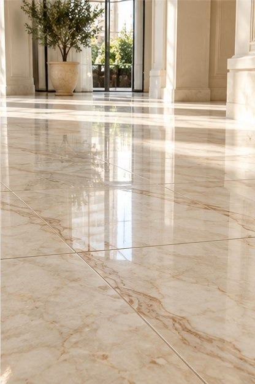

Uma nova vida para cada superfície.
Restauração, limpeza e revestimentos para espaços que merecem cuidado em cada detalhe.
Conheça nosso trabalhoO valor de um espaço está nos detalhes.
Há mais de 8 anos, a RC Art transforma ambientes com atenção às superfícies que fazem parte do dia a dia.
Somos especialistas em restauração e limpeza de pisos, piscinas e bancadas. Atuamos em espaços residenciais, comerciais e industriais.
Conheça a RC Art no InstagramSoluções para cada superfície.
Do cuidado com pisos ao acabamento de áreas externas, cada serviço parte das necessidades do ambiente. Imagens ilustrativas geradas por IA.
Revitalização de pisos
Limpeza, recuperação e renovação visual de superfícies em diferentes ambientes.
O resultado fala por si.
Imagens ilustrativas geradas por IA para mostrar diferentes pisos, revestimentos e acabamentos.






Cada ambiente pede um olhar único.
Um bom resultado começa pela compreensão da superfície, do uso do espaço e do acabamento desejado.
Conte para a RC Art o que você precisa. A equipe orienta o próximo passo para o seu projeto.
Conversar sobre meu espaçoSeu espaço pode viver uma nova fase.
Escolha o serviço e continue a conversa com a RC Art pelo WhatsApp.